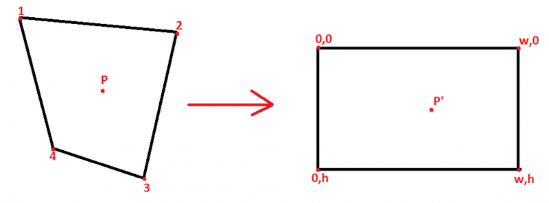
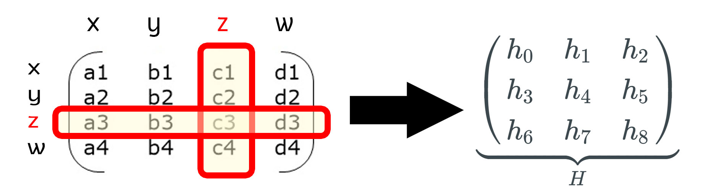
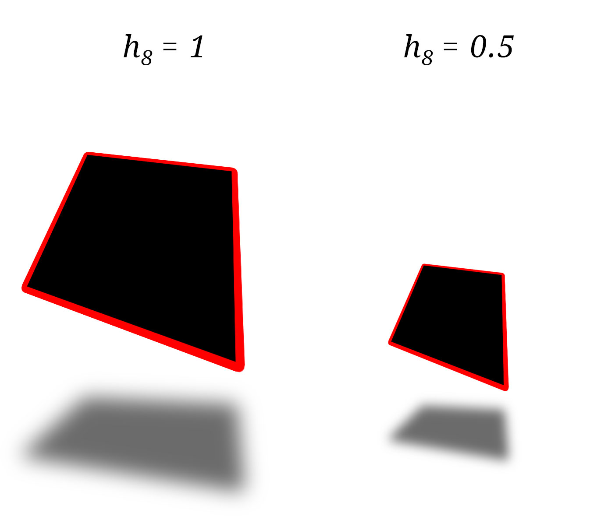
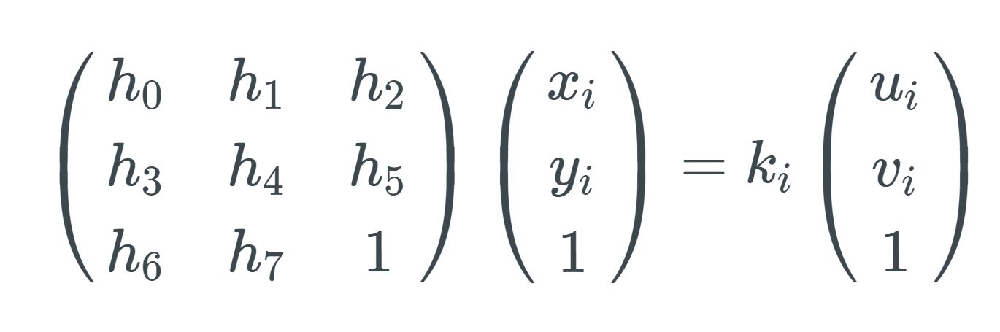
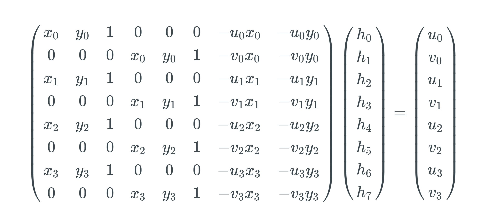
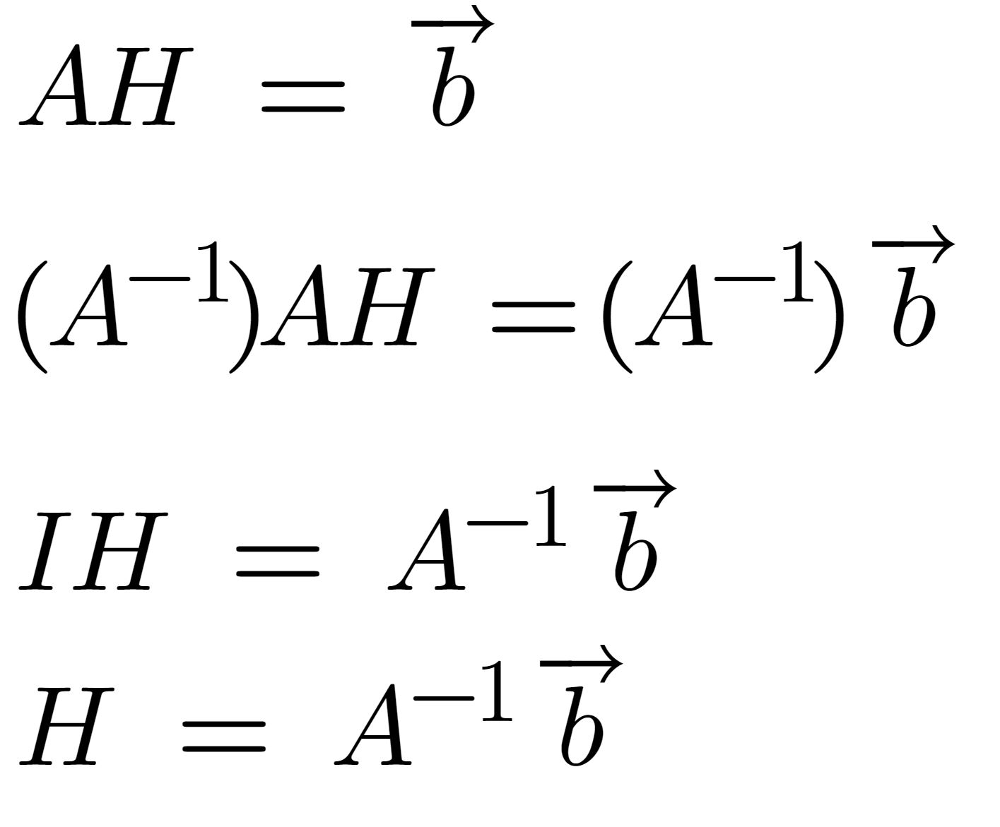
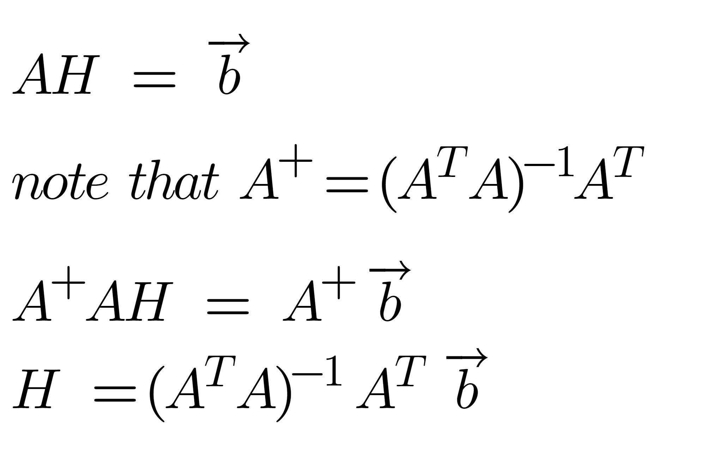

How do we solve transforming an image to a position we want? We might need to do something like this when we want to fix perspective on a particular image.
By fixing the perspective of a rectangle inside a rectangular image, the result becomes a trapezoidal image with a perfect rectangle inside. We achieve this with an unknown transform that we must solve for.
There's no need to bring all 16 values into a system of equations. We know the Z values will essentially be ignored when our 3D image is projected to 2D space.
Additionally, there's an infinite number of solutions in 3D space. This is because for any scaled value in h8 (d4), we could find the points to translate to.
Since we are locking the transformation of h8 to one, we will add a scaling factor k to the other side of the equation.
Technically, for a matrix to create a 3x1 output of every point the transform matrix H should be applied on the left side. Once we set h8 to 1 we find we're trying to solve for this:
After one level of row-reduction (for elimination of k), and then placement into a full system of linear equations matrix, you end with:
Unfortunately, we have a formula for b but we want a formula for H. In normal algebra, we can divide both sides by A, but this is linear algebra. There's no real way to divide a matrix by another, so we multiply by the inverse matrix to solve for H.
One last hiccup. Finding A's inverse isn't considered numerically stable (the determinant of A could be zero causing division by zero!). Also, finding the inverse of a matrix kinda sucks. So we'll be using the Moore-Penrose inverse. Sometimes called A+. If you're using a math library that does this for you, then don't worry. If not, then this is how to do it.
Given 4 points original, and 4 points destination, you're able to perform a direct linear transformation with this formula. Now you can fix the perspective. Remember to properly place your 8 values back inside the 4x4 matrix, leaving the Z values correlating to their normal identity values.